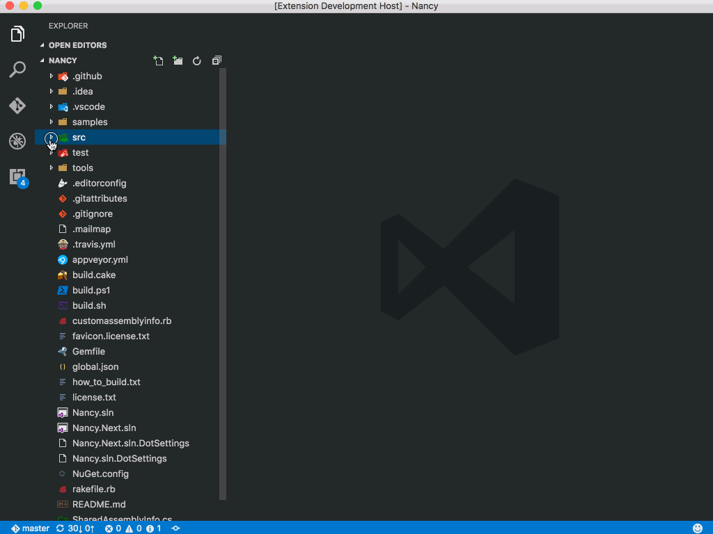
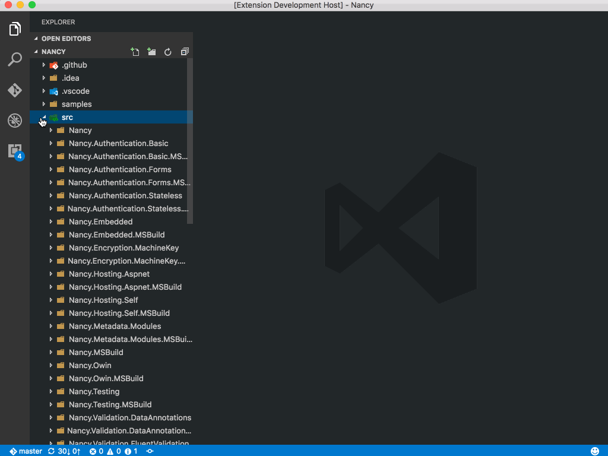
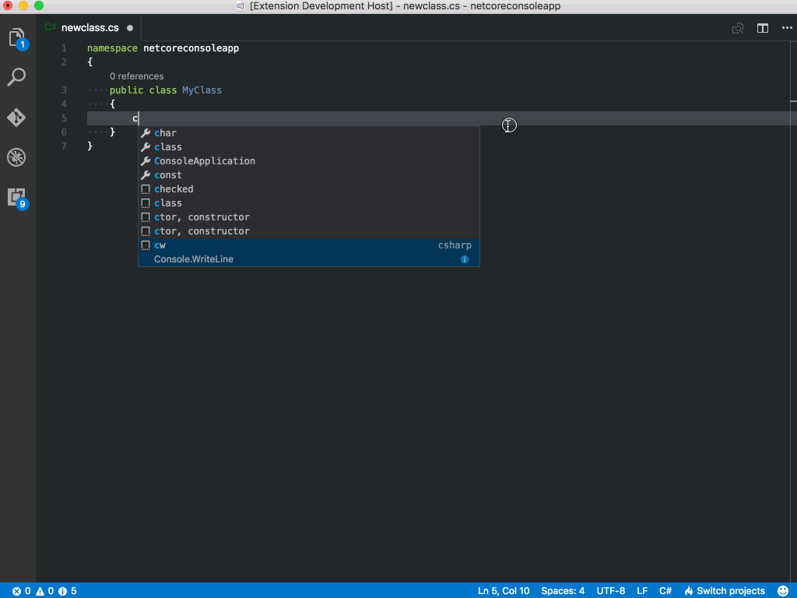
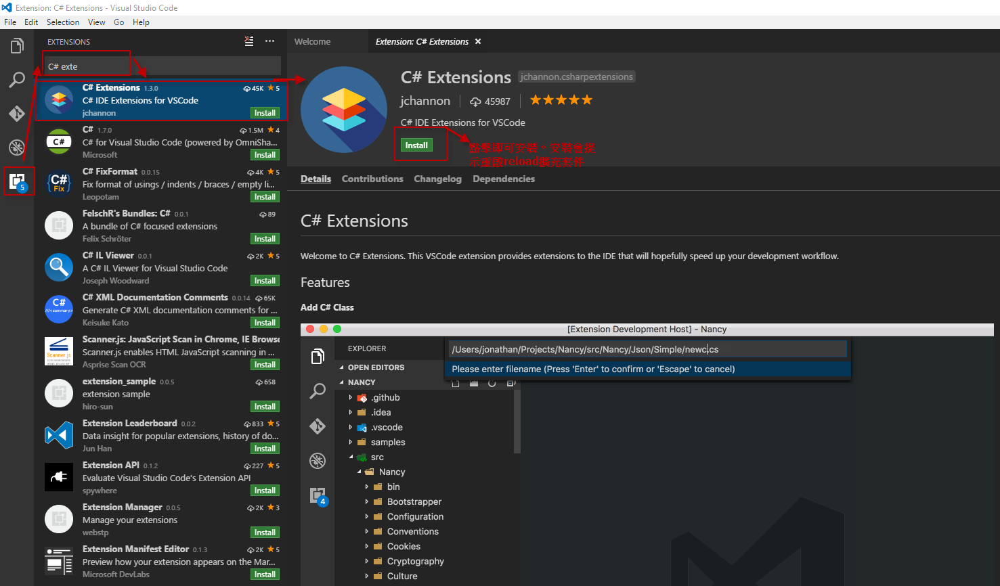
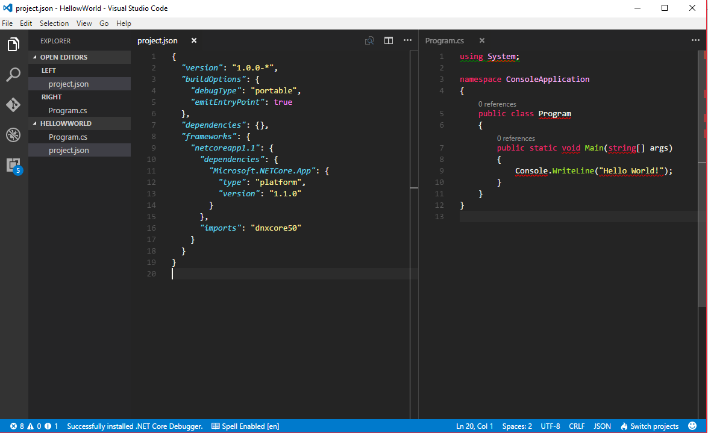
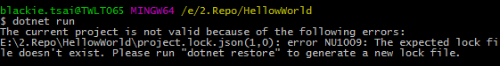
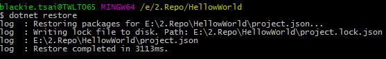
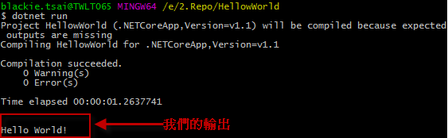

安裝與設定.Net Core的Windows環境
SDK安裝
- 至.Net Core 官網下載.Net Core的SDK與工具，這邊我是選擇Current(1.1 SDK -Installer)，會包含.Net Core的Runtime與cli
- 直接點擊.exe檔案完成安裝
安裝完成後我們可以開啟指令並輸入一下dotnet看一下有無回應
dotnet -v
IDE安裝
這邊我們下載Visual Studio Code(簡稱VS Code)作為我們的開發編輯器。
Visual Studio Code是微軟在 Build 2015 大會上，所推出的免費跨平台編輯器。他本身支持語言特寫、智能代碼補全、自定義熱鍵、括號匹配、代碼片段、代碼對比 Diff、GIT 等特性，並針對網頁開發和雲端應用開發做了優化。軟體跨平台支持 Win、Mac 以及 Linux，是一個輕巧卻強悍的編輯器。比小編之前自費買的Sublime Text與Atom相比毫不遜色，且也是越來越普及。
安裝 - UI
而在我們安裝完編輯器後，我們可以安裝一些不錯的擴充套件來幫我們強化編輯器，加速我們的開發。這邊我們會安裝的編輯器擴充套件-C# extension來協助我們快速建立新的C# Class, Interface, 增添建構子的屬性等，一切的操作我們都可以透過滑鼠右鍵點選即可。



安裝步驟也很簡單，如下圖在編輯器的最左下角點選Extensions後在上方查詢輸入你要查詢的擴充套件，再點選install完成安裝後重啟編輯器即可。

安裝 - 編輯器快速開啟(Ctrl+P)
我們也可以用VS Code快速開啟的功能，在按下Ctrl+P後輸入指令完成安裝
ext install csharpextensions
Command Line Tooling
dotnet cli是我們在安裝SDK時會順便幫我們裝入的工具，可以幫我們建立專案,執行, 還原套件等工作。
- new
建立新專案 - restore
根據project.json使用NuGet還原專案相依的套件 - run
執行專案程式碼 - build
建置專案 - test
建置並以測試模式執行專案 - publish
發布專案 - pack
將專案包成套件進行發布
針對dotcore cli可以來這邊看更詳細的說明。
建立專案
首先我們打開cmd後運用指令幫我們建立一個名為HelloWorld的資料夾
mkdir HellowWorld進入新建的資料夾
cd HellowWorld接者執行透過dotnet cli指令建立一個新的專案
dotnet new
這邊可以看到我們資料夾內建立對應的檔案。

執行程式
接者我們就直接執行程式看預設的專案輸出
dotnet run

這邊我們可以看到如果直接執行會有錯誤拋出，請我們先執行dotnet restore將必要的套件載入，我們按照指示先進行還原
dotnet restore

還原成功後，我們再次執行dotnet run即可看到該專案的輸出
dotnet run

結語
.Net Core的安裝相對ASP.Net來說真的是簡單與輕巧(SDK才45M)太多了。只需下載.Net Core的SDK(官方把Runtime與cli兩個包在一起了)即可開始開發。
C# extension 介紹
這邊也推薦另外一個擴充套件-C#，他提供了以下的功能：
- Lightweight development tools for .NET Core.
- Great C# editing support, including Syntax Highlighting, IntelliSense, Go to Definition, Find All References, etc.
- Debugging support for .NET Core (CoreCLR). NOTE: Mono and Desktop CLR debugging is not supported.
- Support for project.json and csproj projects on Windows, macOS and Linux.
如果上面有不清楚的，可以參考一下Channel9提供的教學影片!